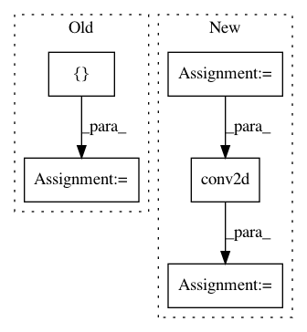

8cdbb1637b140c01f431831e7b2c2a63afc96209,kapre/time_frequency.py,Melspectrogram,call,#Melspectrogram#Any#,328
Before Change
// now, channels_first: (batch_sample, n_ch, n_freq, n_time)
// channels_last: (batch_sample, n_freq, n_time, n_ch)
if self.image_data_format == "channels_first":
power_spectrogram = K.permute_dimensions(power_spectrogram, [0, 1, 3, 2])
else:
power_spectrogram = K.permute_dimensions(power_spectrogram, [0, 3, 2, 1])
// now, whatever image_data_format, (batch_sample, n_ch, n_time, n_freq)
output = K.dot(power_spectrogram, self.freq2mel)
if self.image_data_format == "channels_first":
output = K.permute_dimensions(output, [0, 1, 3, 2])
else:
output = K.permute_dimensions(output, [0, 3, 2, 1])
if self.power_melgram != 2.0:
output = K.pow(K.sqrt(output), self.power_melgram)
if self.return_decibel_melgram:
output = backend_keras.amplitude_to_decibel(output)
return output
def get_config(self):
config = {
After Change
if self.data_format == "channels_first":
x = K.permute_dimensions(x, (0, 2, 3, 1))
x = tf.pad(
x, tf.constant([[0, 0], [self.n, self.n], [0, 0], [0, 0]]), mode=self.mode
) // pad over time
kernel = K.arange(-self.n, self.n + 1, 1, dtype=K.floatx())
kernel = K.reshape(kernel, (-1, 1, 1, 1)) // time, freq, in_ch, out_ch
x = K.conv2d(x, kernel, data_format="channels_last") / self.denom
if self.data_format == "channels_first":
x = K.permute_dimensions(x, (0, 3, 1, 2))
return x
def get_config(self):
In pattern: SUPERPATTERN
Frequency: 3
Non-data size: 5
Instances
Project Name: keunwoochoi/kapre
Commit Name: 8cdbb1637b140c01f431831e7b2c2a63afc96209
Time: 2020-08-14
Author: gnuchoi+github@gmail.com
File Name: kapre/time_frequency.py
Class Name: Melspectrogram
Method Name: call
Project Name: HyperGAN/HyperGAN
Commit Name: 01cc9670d67e6907935e1ea6da9ae4d3b2f312ee
Time: 2017-11-03
Author: martyn@255bits.com
File Name: hypergan/discriminators/pyramid_discriminator.py
Class Name: PyramidDiscriminator
Method Name: build
Project Name: HyperGAN/HyperGAN
Commit Name: edce51a1976684e5a0cc1eef791d2c7aee72fc0d
Time: 2017-01-06
Author: martyn@255bits.com
File Name: hypergan/discriminators/densenet_discriminator.py
Class Name:
Method Name: discriminator